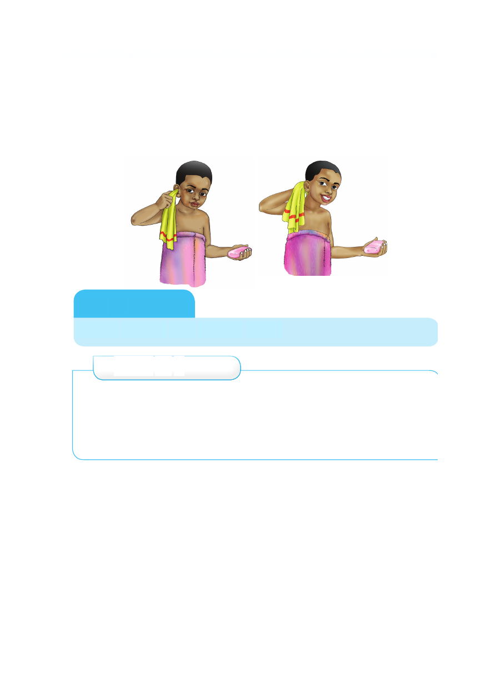

3. Safisha mikunjo ya mbele ya sikio kwa kitambaa.
4. Safisha sehemu ya nyuma ya sikio kwa kitambaa.
5. Kausha masikio kwa kitambaa laini au taulo safi.
6. Tumia kioo kukagua kama masikio yamekuwa safi.
Vitendo vya kusafisha masikio
Kazi ya kufanya
Safisha masikio kwa kufuata hatua
Zoezi la 2
1. Andika majina ya vifaa vinavyotumika kusafishia masikio.
2. Taja sehemu za sikio zinazotakiwa kusafishwa.
3. Masikio yakiuma tunashauriwa kufanya nini?
4. Kwa nini ni hatari kuingiza kitu kwenye masikio?
Usafi wa kucha
Kucha ni sehemu inayofunika ngozi laini ya kidole. Kucha
ndefu huhifadhi uchafu. Uchafu huficha vijidudu vya magonjwa
mbalimbali.Tukila chakula tukiwa na kucha chafu tutapata
magonjwa. Magonjwa hayo ni kipindupindu, kuumwa tumbo
na kuharisha. Tunatakiwa kukata kucha zetu ili tuepuke
magonjwa. Pia tusichangie vifaa vya kukatia kucha. Kuchangia
vifaa husababisha maambukizi ya Virusi vya UKIMWI.